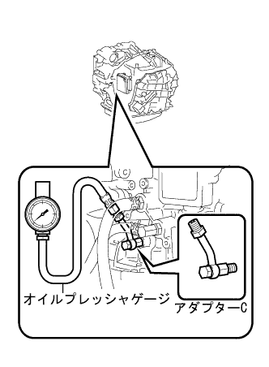

Electronically Controlled Automatic Transaxle [ECT] (U660E) Function Inspection |
| 1. Shift Lock Operation Inspection |
Move the shift lever to P.
Check that the shift lever cannot be shifted out of the P position when operated.
Check that the shift lever can be shifted out of the P position with the IG ON and the brake pedal depressed.
| 2. Shift Lock Release Button Operation Inspection |
Check that the shift lever can be shifted out of the P position when operated while pressing the shift lock release button.
| 3. Time Lag Test |
Apply the parking brake and chock the wheels.
Start the engine.
While depressing the brake pedal, shift from the N position to the D or R position at idle speed, and measure the time until a slight shock is felt.
| 4. Stall Speed Test |
Apply the parking brake and chock the wheels.
Using SST (TaSCAN), select the following menu items.: Diagnosis / Powertrain / ECT / ECU Data Monitor / Engine Speed
Firmly depress the brake pedal with your left foot, shift to the D position, fully depress the accelerator pedal with your right foot, and quickly read the highest engine speed.
| Stall Speed | |
|---|---|
| 2680 r/min | + 200 r/min |
| - 430 r/min | |
| 5. Line Pressure Test |
 |
Remove the test plug, install the automatic transmission oil pressure gauge and adapter C, and start the engine.
Apply the parking brake and chock the wheels.
Firmly depress the brake pedal and shift to the D position.
Using SST (TaSCAN), select the following menu items.: Diagnosis / Powertrain / ECT / Active Test / ECT Shift Position
Select ECU Data Monitor [Engine Speed].
Perform 3 gear in Active Test [ECT Shift Position].
Measure the line pressure at idle speed.
| Engine Condition | Line Pressure |
|---|---|
| At idle | 0.36 to 0.43{3.7 to 4.4}[MPa{kgf/cm2} ] |
Stop the engine.
Disconnect the transmission control computer connector.
Start the engine.
Firmly depress the brake pedal and shift to the D position.
Fully depress the accelerator pedal and quickly measure the line pressure during the stall test.
| Engine Condition | Line Pressure |
|---|---|
| At stall | 1.16 to 1.35{11.8 to 13.7}[MPa{kgf/cm2} ] |
Stop the engine.
Connect the transmission control computer connector.
Firmly depress the brake pedal and shift to the R position.
Measure the line pressure at idle speed.
Fully depress the accelerator pedal and quickly measure the line pressure during the stall test.
| Engine Condition | Line Pressure |
|---|---|
| At idle | 0.80 to 0.95{8.2 to 9.7}[MPa{kgf/cm2} ] |
| At stall | 1.90 to 2.20{19.3 to 22.4}[MPa{kgf/cm2} ] |
Remove the automatic transmission oil pressure gauge and adapter C, and install the test plug
Using SST (TaSCAN), following the screen display, clear the DTCs (see).
| 6. Road Test |
| Inspection Item | Inspection and Check Procedure |
|---|---|
| M Position Function (D ←→ M Switching and "+", "-" Switch Operation Check) | While driving at a constant speed of 55 km/h, move the shift lever from the D position to the M position, and check that the meter display changes from D to M5 and the actual gear is 5 gear. Next, check that when the shift lever is operated to "-" the meter display changes from M5 to M4, when operated to "+" the meter display changes from M4 to M5, and that the actual gear also shifts as shown on the meter display. |
| Shift Shock Level when Driving in D Position | During normal driving, check the shock level at each upshift. |
| Shift Points at Throttle Opening 6% *1 | Start off in the D position with a throttle opening of 6%, and check that the upshift speeds 1 → 2 → 3 → 4 → 5 → 6 gear match the shift points. |
| Lock-up Function | While driving at a constant speed on a level road in the D position in the lock-up speed range (80 km/h or more), lightly depress the accelerator pedal and check that the engine speed does not change greatly. |
| P Position Operation | Stop the vehicle on a slope (approximately 5° or more), shift to the P position, and check that the vehicle does not move when the parking brake is released. |
| Abnormal Noise, Vibration | Check for abnormal noise and vibration while driving and during shifting. |
| Oil Leaks | After the road test, check each part for oil leaks. |
| Throttle Opening | 6% | ||||
|---|---|---|---|---|---|
| Shift Point | 1→2 | 2→3 | 3→4 | 4→5 | 5→6 |
| Vehicle Speed [km/h] | 9 to 14 | 15 to 23 | 28 to 32 | 43 to 48 | 61 to 65 |
| 7. Solenoid Operation Inspection |
TaSCAN Active Test
Turn IG OFF.
Connect SST (TaSCAN) to DLC3.
Turn the IG ON with the engine stopped.
Using SST (TaSCAN), select the following menu items.: Diagnosis / Powertrain / ECT / Active Test
Perform each of the following Active Tests.
| Item Name | Test Details | Restrictions |
|---|---|---|
| ECT Shift Position | Can be set to any shift position | Test possible after warm-up at vehicle speed of 50 km/h or less |
| Shift Linear SOL1 | Solenoid SL1 MIN current ←→ MAX current possible | Possible in P or N position, with engine stopped and at vehicle speed of 0 km/h |
| Shift Linear SOL2 | Solenoid SL2 MIN current ←→ MAX current possible | Possible in P or N position, with engine stopped and at vehicle speed of 0 km/h |
| Shift Linear SOL3 | Solenoid SL3 MIN current ←→ MAX current possible | Possible in P or N position, with engine stopped and at vehicle speed of 0 km/h |
| Shift Linear SOL4 | Solenoid SL4 MIN current ←→ MAX current possible | Possible in P or N position, with engine stopped and at vehicle speed of 0 km/h |
| Lock-up SOL | Lock-up ON ←→ OFF possible | Possible at vehicle speed of 60 km/h or more |
| Lock-up Control SOL (SL) | Transmission 3-way solenoid (SL) MIN current ←→ MAX current possible | Possible in P or N position, with engine stopped and at vehicle speed of 0 km/h |
| Slip Control SOL | Solenoid SLU MIN current ←→ MAX current possible | Possible in P or N position, with engine stopped and at vehicle speed of 0 km/h |
| Line Pressure SOL | Solenoid SLT MIN current ←→ MAX current possible (MAX current → duty ratio 100% (line pressure at idle)) (MIN current → duty ratio 0% (line pressure at stall)) | Possible in P or N position, with throttle fully closed and at vehicle speed of 0 km/h |
| Code | Operating Condition |
|---|---|
| ○ | Energized (ON) |
| × | Not energized (OFF) |
| Shift | Gear Position | SL1 | SL2 | SL3 | SL4 |
|---|---|---|---|---|---|
| D Range | 1-speed | ○ | × | × | × |
| ↑ | 2-speed | ○ | × | ○ | × |
| ↑ | 3-speed | ○ | × | × | ○ |
| ↑ | 4-speed | ○ | ○ | × | × |
| ↑ | 5-speed | × | ○ | × | ○ |
| ↑ | 6-speed | × | ○ | ○ | × |